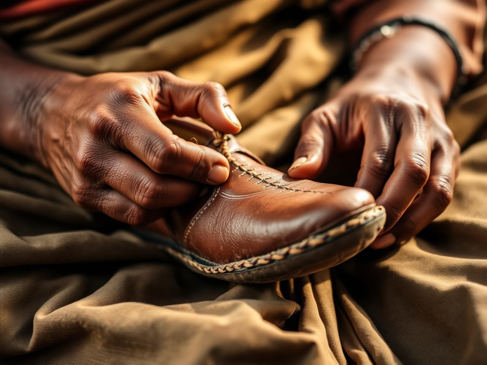

Our story
Three generations, one workshop, countless steps.

Charan Paduka began in 1962 in a quiet corner of Jaipur, where our grandfather set up a small bench, a few tools, and a dream of making the most comfortable footwear in the city.
Six decades on, we still work the same way — leather is cut by hand, soles are stitched with waxed cotton thread, and every pair is finished with a small motif painted by my mother.
We believe in slow craft. A pair of our juttis takes two days to make and, with care, will walk with you for many years.
60+
Years of craft
100%
Hand-stitched
12
Local artisans